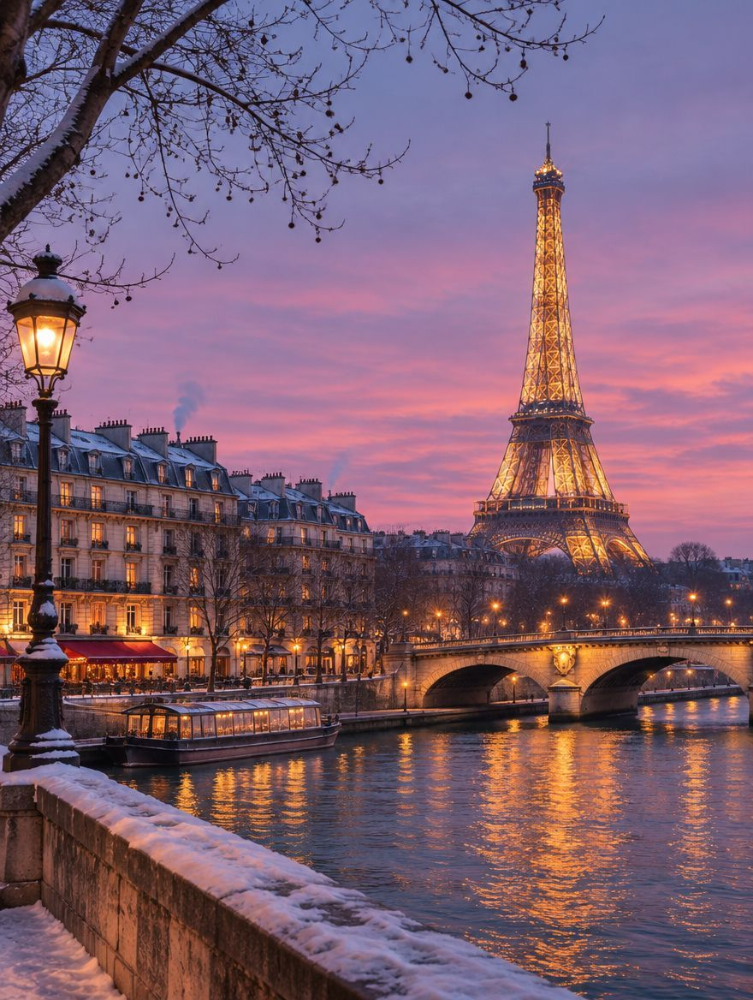
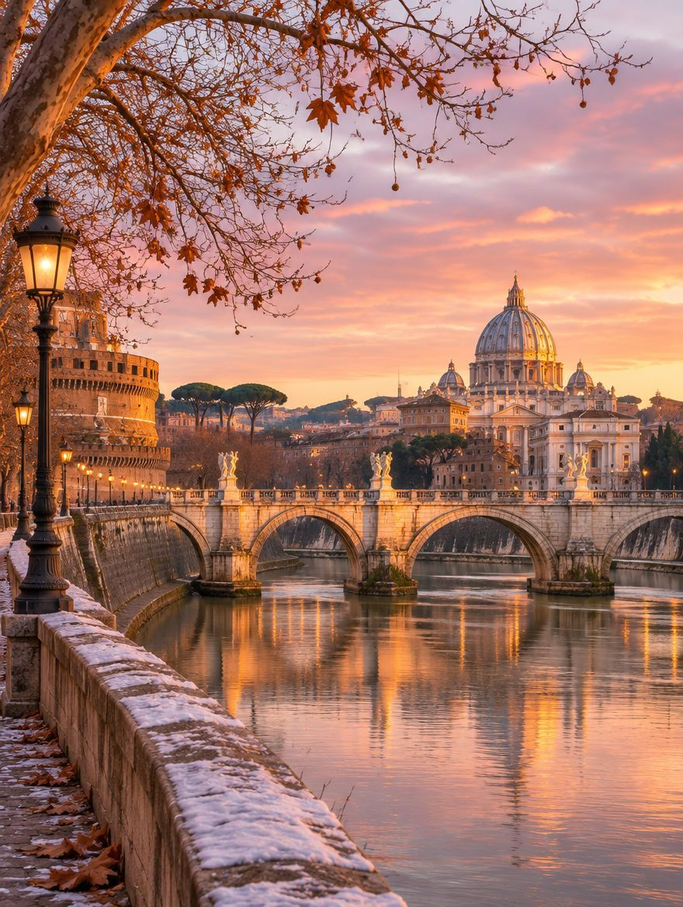

Una propuesta preparada para la familia Oyarzún.
Elegí cada hotel pensando en ustedes cinco: bien ubicados, con buenas opiniones de quienes ya se alojaron y con espacio para viajar cómodos entre adultos.
Ustedes ya conocen Europa. Por eso les dejo, en cada ciudad, rincones que no salen en las guías y que se recorren sin apuro.
Para los chicos es la primera vez. Los hoteles quedan cerca de lo imperdible, para que salgan a la calle y ya estén en el viaje.
Madrid, Barcelona, París, Florencia y Roma, y vuelta a casa desde Madrid.
11 noches en Barcelona, París, Florencia y Roma, para los cinco, en los alojamientos de esta propuesta.
Madrid: su Airbnb, por cuenta de ustedes. Valores en dólares por toda la estadía. Precios sujetos a cambios según disponibilidad.
No es una lista de búsqueda: revisé ubicación, opiniones y espacio para cinco adultos.
Fechas, ciudades y traslados pensados como un solo viaje, no como reservas sueltas.
Antes y durante el viaje, si algo cambia o surge una duda, me escriben directo a mí. Sin call centers.

Si la propuesta les gusta, me escriben y dejamos todo reservado.
Lo quiero